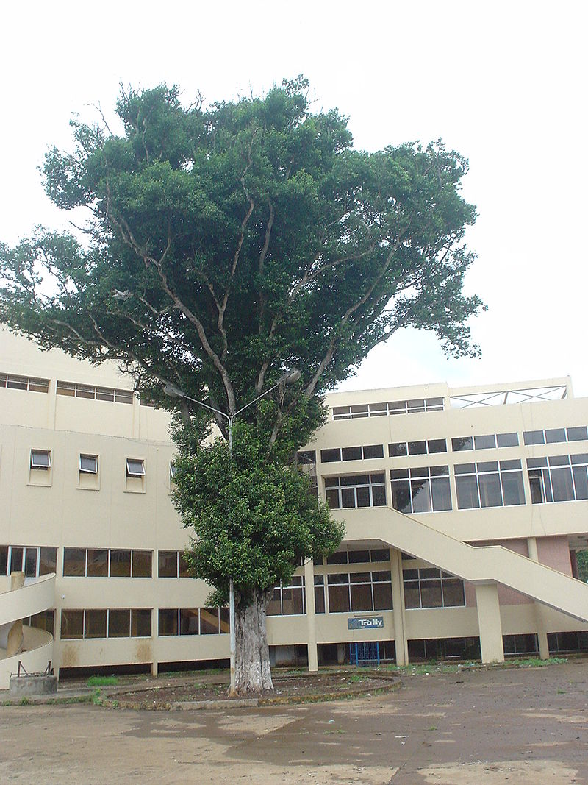

Tiết 11: nhạc sĩ Phan Huỳnh Điểu và bài hát Bóng cây Kơ-nia
Tác giả: Phan Huỳnh Điểu

Phan Huỳnh Điểu (11/11/1924 - 29/6/2015) là một trong những nhạc sĩ tiêu biểu nhất của dòng nhạc cách mạng Việt Nam trong thế kỉ XX. Phần lớn các ca khúc của Phan Huỳnh Điểu là nhạc đỏ, nhưng ông cũng có nhiều ca khúc trữ tình đặc sắc. Ông được mệnh danh là "Con chim vàng của nền âm nhạc Việt Nam" và được Nhà nước Việt Nam trao tặng Giải thưởng Hồ Chí Minh về văn học nghệ thuật vì những đóng góp của mình cho sự nghiệp âm nhạc Việt Nam. Rất nhiều các bài hát của ông có lời từ các tác phẩm thơ.
Ông là người con thứ 11 trong một gia đình cha làm thợ may. Tuy sinh ra và lớn lên ở Đà Nẵng, nhưng nguyên quán gốc của ông ở Điện Bàn, Quảng Nam.
Ông bắt đầu hoạt động âm nhạc từ năm 1940 trong nhóm tân nhạc. Sau ca khúc đầu tay Trầu cau, sáng tác của ông được biết rộng rãi là bài Đoàn Vệ quốc quân viết cuối 1945. Một nhạc phẩm nổi tiếng khác của ông là Mùa đông binh sĩ được viết khoảng giữa thập niên 1940.
Năm 1955, sau khi tập kết ra Bắc, ông công tác ở Ban Nhạc vũ, Hội Văn nghệ Việt Nam. Năm 1957, khi thành lập Hội Nhạc sĩ Việt Nam, ông được cử vào Ban chấp hành là Ủy viên Thường vụ và công tác tại Hà Nội. Tháng 12 1964, Phan Huỳnh Điểu vào chiến trường Trung Trung Bộ ở trong Ban văn nghệ Khu. Thời gian đó ông viết bản hành khúc Ra tiền tuyến với bút danh Huy Quang.
Sau 1975, Phan Huỳnh Điểu chuyển về Hội Âm nhạc thành phố Hồ Chí Minh và sống ở đó. Ông đã sáng tác và công bố hơn 100 ca khúc, quá nửa trong số đó là các bài hát phổ thơ.
Âm nhạc của Phan Huỳnh Điểu có giai điệu trau chuốt, trữ tình, ngay cả trong thể loại hành khúc, như Cuộc đời vẫn đẹp sao, Hành khúc ngày và đêm. Phan Huỳnh Điểu còn có nhiều ca khúc về đề tài tình yêu thành công như Tình trong lá thiếp, Những ánh sao đêm, Bóng cây Kơnia, Anh ở đầu sông em cuối sông, Sợi nhớ sợi thương, Ở hai đầu nỗi nhớ, Đêm nay anh ở đâu, Thuyền và biển, Thơ tình cuối mùa thu, Người ấy bây giờ đang ở đâu, Tình ca Đămbri, Tia nắng... Ông đã phổ nhạc thành công cho rất nhiều bài thơ.
Ngoài ra, ông còn sáng tác một số tác phẩm dành cho thiếu nhi, tiêu biểu là: Đội kèn tí hon, Nhớ ơn Bác...
Sau khi có dấu hiệu không khỏe và sốt nhẹ vào ngày 23 tháng 6 năm 2015, ông được bác sĩ đến khám tại nhà và được thông báo bị thiếu máu. Sau đó, ông được nhập viện vào sáng ngày 26 tháng 6 trong tình trạng còn khỏe và tỉnh táo. Sau 2 ngày nhập viện, ông bị hôn mê sâu và qua đời vào lúc 10 giờ 15 phút sáng ngày 29 tháng 6 tại bệnh viện Thống Nhất (Thành phố Hồ Chí Minh) vì sốt xuất huyết. Linh cữu của nhạc sĩ được quàn tại Nhà tang lễ Bộ Quốc phòng, Thành phố Hồ Chí Minh vào lúc 4h30 sáng 10 tháng 7, gia đình, người thân, bạn bè, văn nghệ sĩ... đã rải tro cốt của ông về với sông Hàn (Đà Nẵng) theo di nguyện của cố nhạc sĩ.
Một số tác phẩm tham khảo: (bấm vào link) Trầu cau Đoàn vệ quốc quân Thuyền và biển Cuộc đời vẫn đẹp sao
Tác phẩm: Bóng cây Kơ-nia
Bóng cây Kơ-nia là bài thơ của nhà thơ Ngọc Anh phỏng dịch dân ca Hrê, được viết trong những năm 1957–1958. Bài thơ đã được nhiều nhạc sĩ phổ nhạc, trong đó nổi tiếng nhất phải kể đến là 2 ca khúc cùng tên của nhạc sĩ Phan Huỳnh Điểu và nhạc sĩ Phan Thanh Nam.
Nhà thơ, nhà báo Ngọc Anh, tên thật Nguyễn Ngọc Anh (1932–1964) sinh tại Đại Lộc, Quảng Nam. Ông tham gia chiến đấu chống Mỹ từ năm 1957 tại chiến trường Tây Nguyên và mất vào năm 1964 tại Kon Tum. Ông đóng góp một số công trình nghiên cứu về văn hoá Tây Nguyên và một số bài thơ được công chúng đón nhận.
Bài thơ Bóng cây Kơ-nia được sáng tác trong những năm 1957–1958 (theo nhà văn Nguyên Ngọc) lúc tác giả đang làm việc tại Ban Văn Sử Địa Trung ương. Bài thơ được in trong tập thơ Tiếng hát miền Nam do Nhà xuất bản Văn học in năm 1959. Bài thơ được phỏng dịch theo điệu Kachoi của dân ca Hrê.
Bài hát Bóng cây Kơ-nia được nhạc sĩ Phan Thanh Nam phổ thơ Ngọc Anh trước ca khúc nổi tiếng hơn của nhạc sĩ Phan Huỳnh Điểu. Bài hát khá nổi tiếng và được ca sĩ Tường Vi thể hiện thành công, đã được phát trên sóng của Đài Tiếng nói Việt Nam. Ca khúc da diết tình cảm, nhiều cao trào, tuy nhiên giai điệu trúc trắc và hơi khó nghe nên sau này không được các ca sĩ thể hiện lại.
Nhạc sĩ Phan Huỳnh Điểu sáng tác ca khúc này vào năm 1971 sau 6 năm công tác ở chiến trường miền Nam và Tây Nguyên. Ca khúc đầu tiên được NSƯT Măng Thị Hội (lúc này vẫn đang học tại Nhạc viện Hà Nội) thể hiện thành công và được nhạc sĩ Phan Huỳnh Điểu đánh giá là người thể hiện thành công nhất. Ca khúc ra đời đã được công chúng yêu thích và đón nhận. Sau này bài hát đã được nhiều nghệ sĩ khác thể hiện và được hát nhiều trong các cuộc thi Sao Mai, Tiếng hát truyền hình các địa phương...
Nhạc sĩ Phan Huỳnh Điểu đã dùng chất liệu âm nhạc dân gian Tây Nguyên tạo nên một ca khúc sâu lắng, trữ tình lúc tha thiết nhớ nhung (đoạn đầu), lúc thôi thúc dồn dập (đoạn sau), lúc vang vọng nhắn nhủ (đoạn kết) làm rung động biết bao người nghe.
Tìm hiểu thêm
Cây Kơ-nia
Kơ nia là tên địa phương của một loài thực vật có tên khoa học là Irvingia malayana thuộc chi Irvingia có nguồn gốc ở châu Phi và Đông Nam Á.
Kơ nia được phân bố rộng rãi tại châu Á, cây có mặt tại Lào, Campuchia, Thái Lan, Malaysia, Indonesia. Ở Việt Nam, cây này phân bố từ Quảng Nam đến một số tỉnh Nam Bộ và còn mọc ở các đảo Phú Quốc, Côn Đảo nhưng tập trung ở các tỉnh Tây Nguyên, nhiều nhất là ở Sa Thầy - Kon Tum, Lắk, Bản Đôn-Đắk Lắk...Quảng nam gọi cây này là cây cốc,ở QN có rất nhiều cây kơ-nia cổ thụ.
Kơ nia là loài thực vật thân gỗ lớn, cao 15–30 m, đường kính 40–60 cm. Lá đơn hình trái xoan mọc chụm ở đầu cành. Hoa màu trắng, có từ 4 đến 5 cánh, mọc thành chùm ở kẽ lá, trổ vào thời gian từ tháng 5 đến tháng 6. Quả hình trái xoan dài 3–4 cm, có màu vàng nhạt khi chín và thường xuất hiện vào khoảng tháng 10-11. Hạt có chứa tinh dầu mùi thơm có thể dùng làm thực phẩm.
Làm thuốc chữa no hơi, đầy bụng, trừ sốt rét rừng, chói nước.Ngoài ra ở Quảng Nam ngày xưa hay dùng cây này(gọi là cây cốc) để đóng cối xay lúa. Trái của nó chín rụng xuống, đem chôn dưới đất cho tróc hết phần vỏ, đem hạt rửa phơi khô để giành lấy rựa chẻ ăn. Nên mới có câu: Ăn cốc cộc tay, vì khi khô hạt nó cứng, chẻ hay bị đứt tay.
Loài cây này mang ý nghĩa tâm linh rất lớn đối với người đồng bào dân tộc thiểu số, họ coi chúng là nơi trú ngụ của thần thánh, của vong linh những người đã khuất, rất ít khi họ đụng chạm đến chúng, chặt phá chúng; vì vậy trên nương rẫy của đồng bào thường có các cây kơ nia cổ thụ được sử dụng như cây che mát mỗi lúc nghỉ giải lao, nghỉ trưa. Người Kinh khi làm rẫy cũng chừa lại cây Kơ nia làm bóng mát không phải vì lý do tâm linh mà vì gỗ cây này quá cứng nên rất phí công đốn hạ nó. Vì bài hát Bóng cây Kơ-nia nên du khách khi đến với các tỉnh Tây Nguyên thường kiếm tìm, xem thử tận mắt cây kơ nia. Ở trung tâm thành phố Buôn Ma Thuột có một cây kơ nia cổ thụ nằm trong khuôn viên sân sau nhà văn hoá trung tâm tỉnh, cách ngã 6 Ban Mê vài trăm mét.